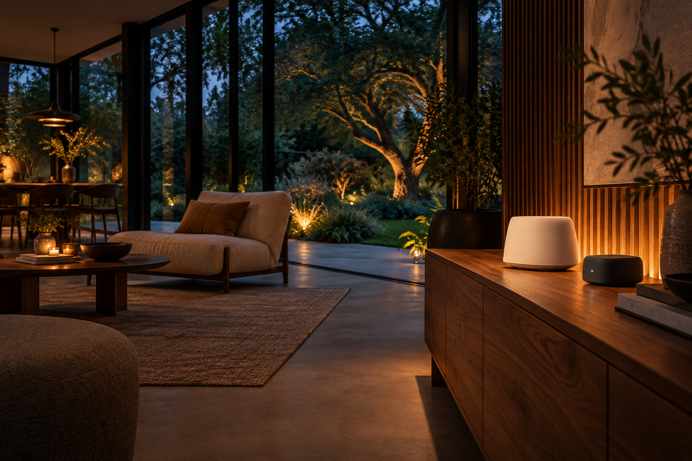
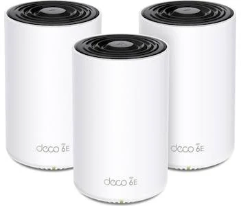

01 / PÅ VORES RADAR
Færre produkter.
Mere at gå i dybden med.
Det nye, det interessante og det, der fortjener et ekstra kig. Tre nedslag i et hjem i udvikling.
02 / BAG VURDERINGEN
Nørdet med vilje.
Åbent om detaljerne.
Et datablad er begyndelsen. Det interessante er, hvad teknologien betyder i et rigtigt hjem.
Se vores testprotokolTestprotokol & dokumentation +
Det skal kunne gentages
En dokumenteret test skal angive model, firmware, dato og opsætning. Netværk måles med samme klient og server; robotter med kendt areal og registreret manuel indgriben; låse med beskrevet dør og nødadgang.
Analyse er ikke en måling
Produktanalyserne på siden er tekniske gennemgange. Betaadgang, egne testresultater og målte hastigheder oplyses kun, når dokumentationen findes. Tidligere karakterer og vurderinger er bevaret som arkivmateriale.
03 / UDSTYRSARKIVET
Hele samlingen.
I dit eget tempo.
De oprindelige anbefalinger er her stadig. Find din kategori, og åbn en grundigere gennemgang.

Dit næste projekt
starter her.
produkter og produktfamilier. Ingen endeløs produktvæg.
04 / FORSTÅ DIT SETUP
Samme hjem.
Forskellige sprog.
Sammenlign alle standarderne ↓
| Standard | Type | Frekvens | Du skal bruge | Bedst til |
|---|
KORT SAGT
05 / FRA IDÉ TIL INSTALLATION
Et godt setup.
Også uden nørderiet.
FÅ HJÆLP TIL RESTEN.
Tilbudstjenesten er ikke tilsluttet endnu. Du kan forberede og downloade din opgavebeskrivelse her. Intet sendes til os.
GODT SPURGT
Lad os tage
det sidste.
De spørgsmål, der ofte følger med et smartere hjem.